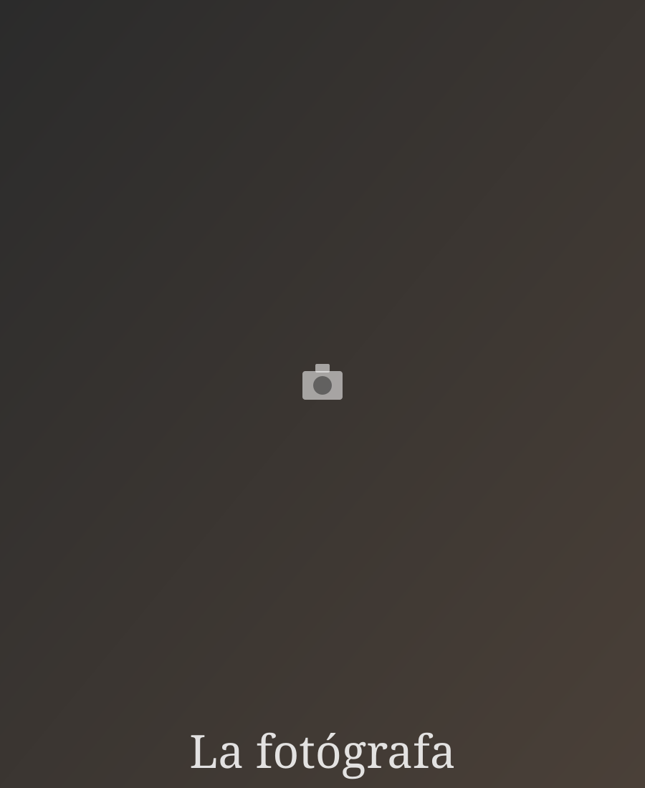

Conóceme
Sobre mí

Hola, soy Ana
Fotógrafa profesional desde hace más de 8 años
Empecé fotografiando a amigos y familia con una cámara prestada, y ese amor por congelar momentos se convirtió en mi profesión. Desde entonces he tenido el privilegio de documentar más de 200 bodas, cientos de sesiones de retrato y decenas de eventos corporativos.
Mi enfoque es sencillo: la mejor foto es la que se siente real. Trabajo con luz natural siempre que puedo, dirijo lo mínimo necesario y dejo que los momentos genuinos sucedan frente a la cámara.
Cuando no estoy detrás del objetivo, probablemente esté explorando senderos de montaña en busca de la próxima gran luz, o revisando cientos de fotos con un café en la mano.
Mi equipo
Cómo trabajo
Equipo profesional
Cámaras full-frame, óptica prime y equipo de iluminación para cualquier condición de luz.
Edición cuidada
Cada foto pasa por un proceso de selección y edición manual para mantener un estilo coherente y atemporal.
Entrega rápida
Galería digital privada lista en un plazo de 2 a 4 semanas, con opción de álbum impreso.